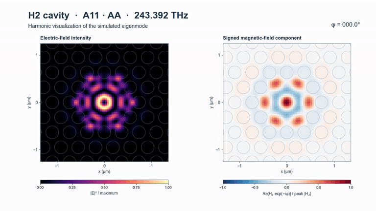
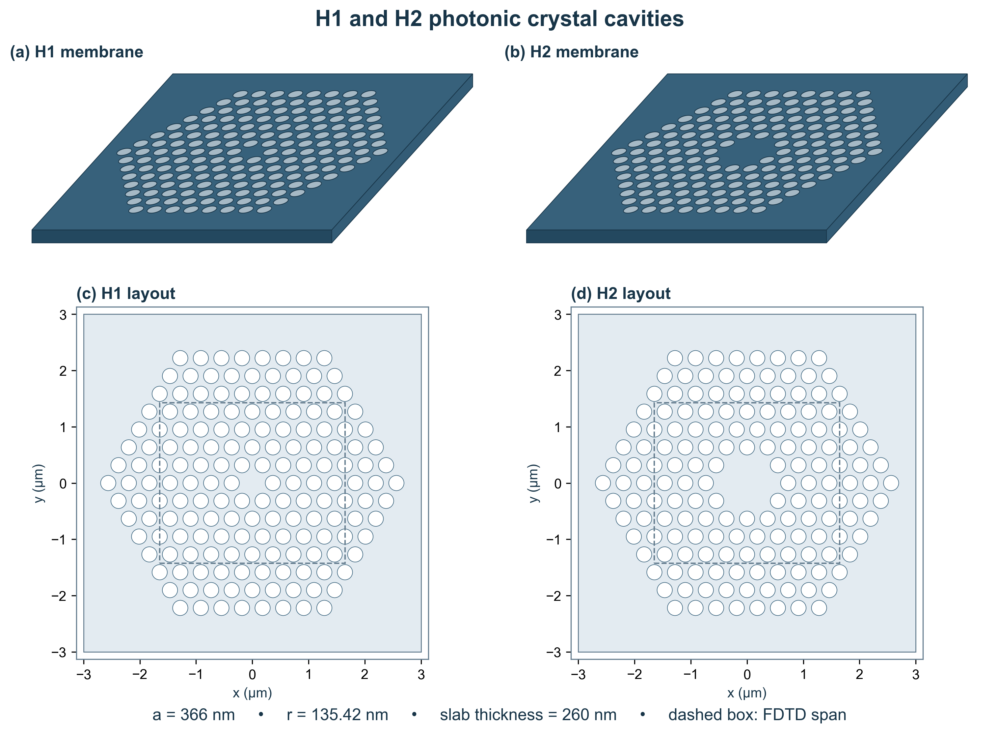

I used four mirror-symmetry settings to separate overlapping H2 resonances and selected the A11 peak for field visualization.
3D FDTD
I used 3D FDTD to compare H1 and H2 cavities in a 260 nm suspended dielectric membrane with a 366 nm triangular lattice. H1 removes one central hole. H2 removes the center hole and its six nearest neighbors.


I used four mirror-symmetry settings to separate overlapping H2 resonances and selected the A11 peak for field visualization.